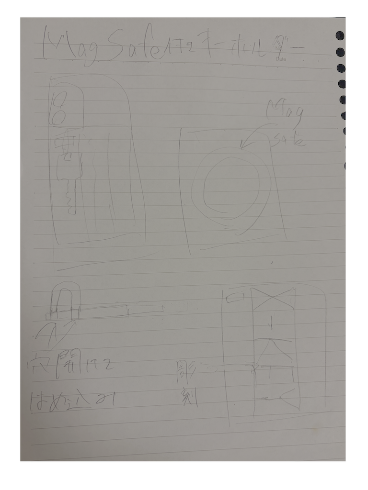
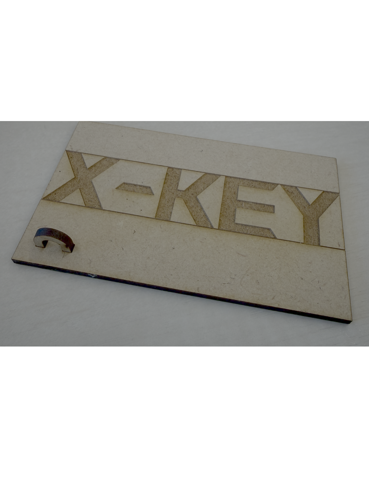
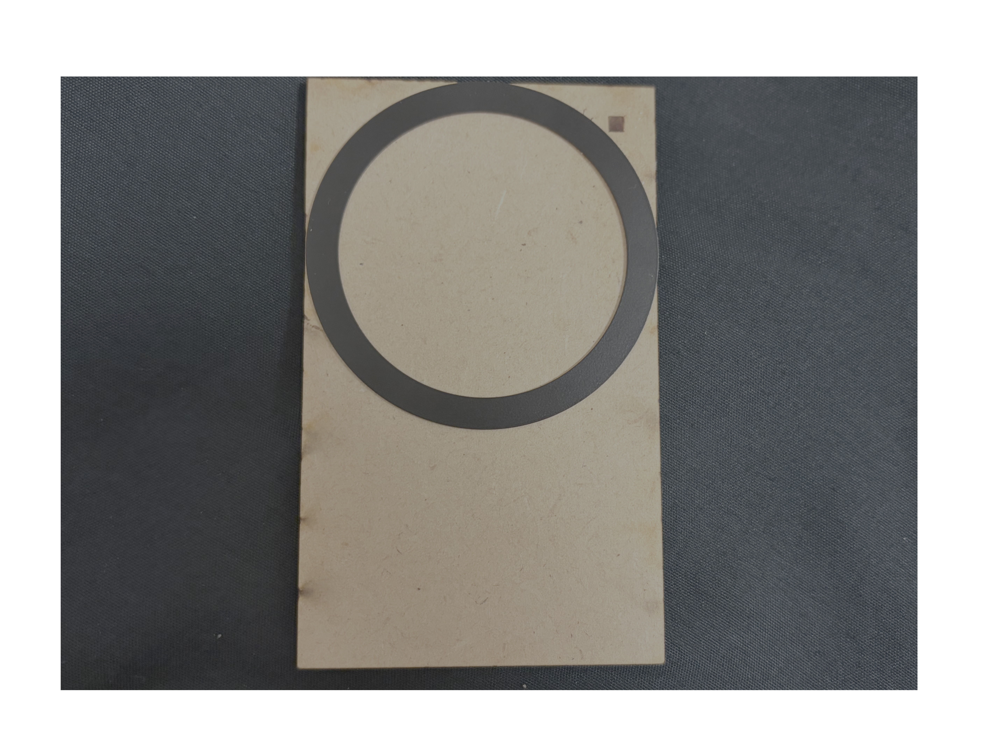

MagSafe付きキーホルダー
＜なぜこの作品を作ったか＞
私自身キーケースを持っていないので日頃から財布に入れるのですが、大学終わりバイトに行くときバッグを入れ替える際、財布をバイトのバッグに入れ忘れで、家に入れないことが何度もあったため、日頃から手放さないスマホにつけたいと思ったのがきっかけです。
＜作品の詳細＞
私はMagSafe付きのスマホを使っているので素材の板をスマホにつけられるサイズにカットし、キーホルダーをつけられるフックをはめ込み、X-KEYという文字を彫刻したものをデザインしました。 最後に、100円ショップで購入したMagSafeシールをつ貼って完成です。


＜完成＞
・スマートでオシャレかつ実用的なものができた。
・レーザーカットがとにかく「かっこいい」という感想と最高にロマンがあると興味を持てた。
・課題はフックの横幅が少し短くゆるゆるになってしまい、予定にはないボンドを使ってしまった。


